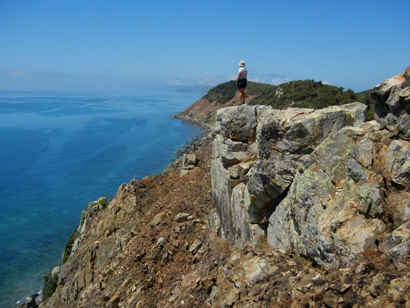
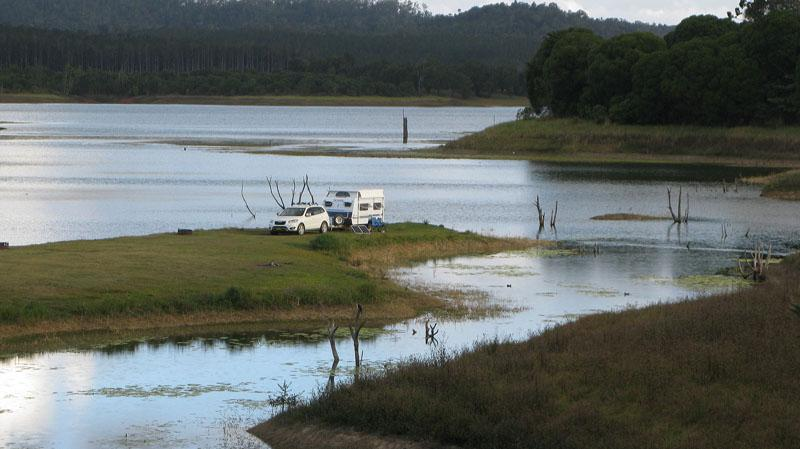
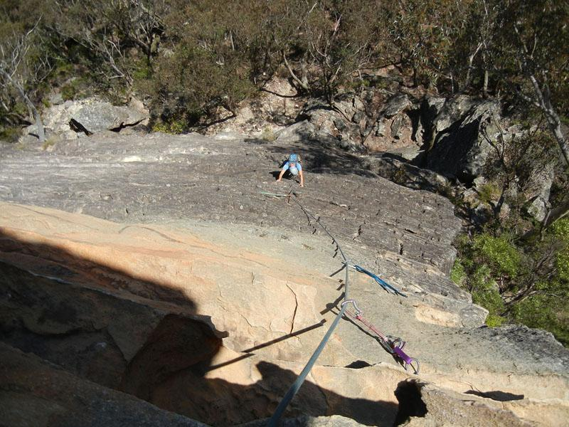
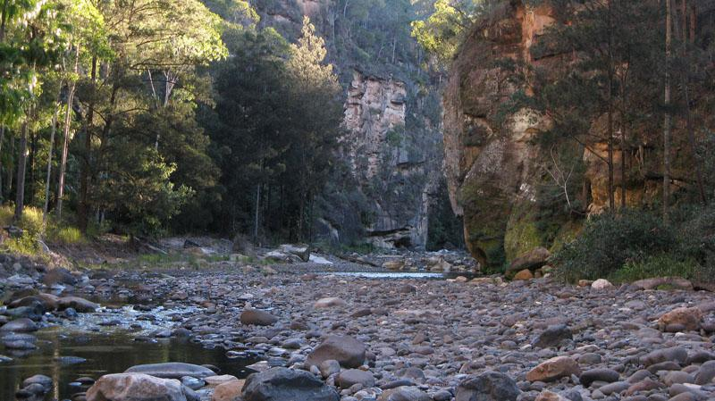
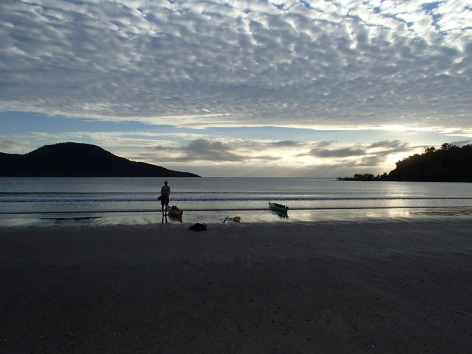
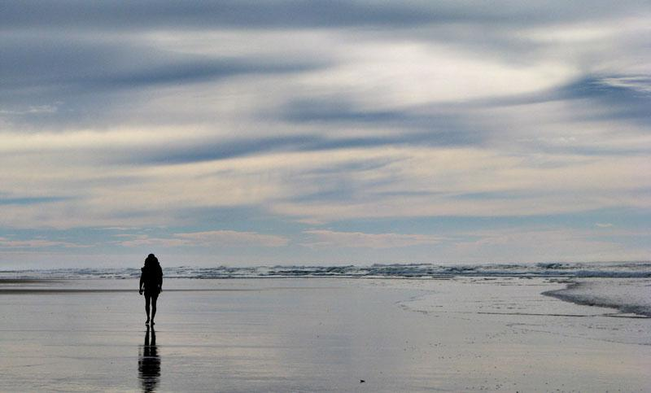
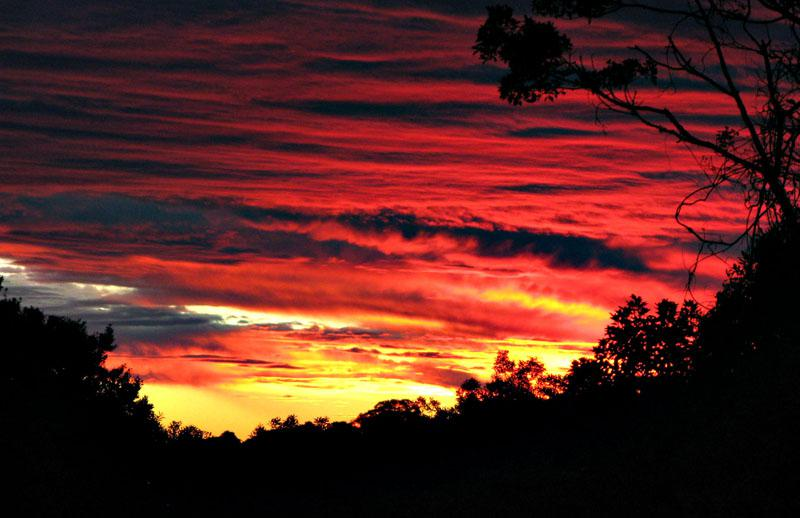

Happy Holidays From The Land Down UnderIt's another 30 degree day in Cairns as I write this, and, it doesn't feel much like Christmas without snow on the ground or making plans to ski on Christmas Day. We feel a little bit stunned that we have both passed 50 and have been living in Australia for over one year.  Orpheus Island Our epic journey around Australia – ostensibly to find somewhere to live – has washed us up in Far North Queensland for the wet season where we are house-sitting for another couple of Australians who have gone south for the summer. It seems a long time ago that we started out from Sydney with all our gear packed into our four metre caravan and our two sea kayaks on the roof.  Camp at Lake Tinaroo It was, as usual, an eventful year. After spending the Australian summer hiking and sea kayaking in southern NSW and Victoria, we paused for a while at Marjorie's in Sydney while we acquired and outfitted a caravan for our trip around Australia - which down under is pretty much a rite of passage for retired folks like ourselves. We left Sydney at the end of April, and after spending a week or so rock climbing at the Blue Mountains, we travelled north to Queensland and have been in the state ever since. We had some good, if challenging rock climbing at Frog Buttress – a well known, in climbing circles, crack climbing area – got on some good sport routes at the Glasshouse Mountains, met The Whopper at the Brooyar climbing area near Gympie, and, finally, climbed on well bolted (with anchors!) routes at Kangaroo Point along the banks of the Brisbane River in Queensland's capital city. In Cairns, we boulder a couple of times each week at the free bouldering area on the foreshore provided by Cairns City Council.  The Eyrie, Blue Mountains Queensland has a very good network of short and long distance walking tracks. In the southern part of Queensland, we rock-hopped and scrambled through the trap-rock gorges of Sundown National Park. We trekked through Girraween National Park through to Bald Rock National Park and saw the hide-out of the notorious bush-ranger Ned Kelly. Further north we did many day hikes through the rain forests of the Border Ranges, and did a four day circuit walk on Fraser Island through massive old growth rainforest and along the east coast beaches. In the sandstone country to the west of Bundaberg we hiked the Carnarvon Great Walk over five days through spectacular gorge country and past some amazing indigenous rock art. Closer to Cairns, we hiked to the top of Queensland's highest mountain, Mount Bartle Frere, a knee-knackering trip that we will never repeat!  Carnarvon Gorge The ocean kayaking has been better than we ever imagined, and, although we have now paddled almost the entire coast from Ingham to Cooktown, there are still many more trips to do. Our favourite trips have been paddling through the off-shore island groups and camping along the way. The most memorable trips have been the 80 km trip along the east coast of Hinchinbrook Island from Lucinda to Cardwell and island hopping 100 km from Cooktown to Lizard Island. There have been many other wonderful island trips, through the Barnard, Palm, Family and Frankland Islands, and a whole stretch of coastline north and south of Cairns still remains to be explored.  Morning at Zoe Bay, Hinchinbrook Island We have met many friendly Australians, and, have been welcomed into the Cairns community of hikers, kayakers and cylcists, some of whom even eat like cavemen! Truly we have much to be thankful for as 2014 approaches.  East Beach, Fraser Island To commemorate the one year anniversary of our move to Australia, Doug has assembled a collage of his photo. If you really want to see more, check out the slideshow. To all our friends and family, we wish you health, happiness and all good things in the year ahead.  Sunset Lamington National Park Doug & Sandy. |